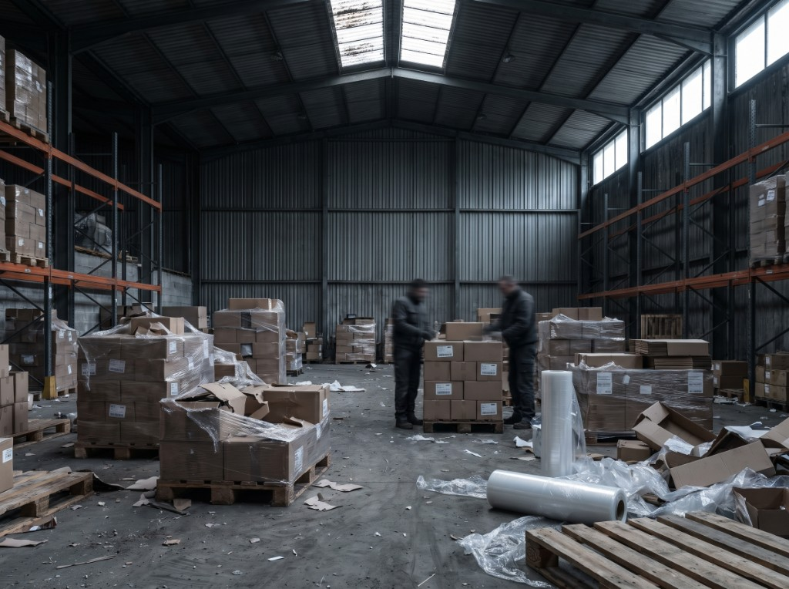

Интеллектуальная собственность

Регистрация товарных знаков
Товарный знак — визитная карточка и актив бизнеса. Прежде чем его использовать, нужно обеспечить правовую охрану: мы ведём знак от проверки обозначения до свидетельства и дальше — в России и за рубежом.
- Проверка обозначения и подача заявки
- Делопроизводство до получения свидетельства
- Продление, изменения, зарубежная регистрация
- Лицензии и договоры с третьими лицами
Комплексная защита знака
Защита работает, когда она планомерна и охватывает все виды нарушений сразу. Комплексное использование доступных инструментов даёт максимально возможный уровень охраны знака.
- Тождество и сходство до степени смешения
- Недобросовестная конкуренция
- Онлайн и офлайн в одном контуре
- Мониторинг рецидивов после пресечения
Online Brand Protection System
Собственное веб-приложение находит нарушающий контент любого типа и ведёт досудебную работу с администраторами ресурсов, хостинг-провайдерами и регистраторами доменных имён.
- Поиск по цифровому отпечатку (hash comparison)
- Связка с внутренней системой VCC: адреса точек для рейдов
- Анализ администраторов и аффилированных ресурсов
- Автоматический контроль повторных нарушений
Досудебные меры в сети
Большинство нарушений в интернете снимается без суда — если действовать быстро и по всем адресам сразу.
- Отбор подозрительных ссылок командой аналитиков
- Жалобы администратору, регистратору и хостинг-провайдеру
- Take down tools для быстрой блокировки на популярных платформах
- Блокировка рекламы и результатов поиска
Офлайн-защита бренда
Онлайн-след ведёт к физическому адресу. Дальше — контрольная закупка, проверка и рейд вместе с правоохранительными органами.
- Тестовая (контрольная) закупка и проверка товара на подделку
- Установление фактического адреса цели
- Проверочные мероприятия с сотрудниками полиции
- Организация уничтожения контрафакта и контроль исполнения решения суда
Представительство в судах по ИС
Представительство в судах по спорам, связанным с интеллектуальной собственностью — от досудебной стратегии до исполнения решения.
- Взыскание убытков и компенсаций с нарушителя
- Изъятие и уничтожение контрафакта за счёт нарушителя
- Прекращение охраны чужих знаков, мешающих работе
- Запрет на использование знака или объекта авторских прав
Мониторинг ведётся по семи типам ресурсов
Рейды с полицией
Рейды на производствах, в торговых точках и на складах — один из самых действенных инструментов программы. Взаимодействие с правоохранительными органами выстроено на всех этапах: от обнаружения нарушения до организации уничтожения контрафакта.
-
01
Мониторинг и сбор информации
Собственное расследование до обращения в полицию: кто нарушает, где магазины и склады, какими маршрутами идёт контрафакт.
-
02
Организация и участие в рейде
Наши специалисты работают в рейде вместе с полицией, чтобы подделка была изъята, а нарушитель привлечён к ответственности.
-
03
Юридическая поддержка
Ведение уголовных и административных дел, возбуждённых по итогам рейда, чтобы нарушители не ушли от ответственности.
-
04
Уничтожение контрафакта
Организация уничтожения контрафактной продукции после решения суда и контроль фактического исполнения: подделка не должна вернуться на рынок.
-
05
Мониторинг после рейдов
Регулярные проверки выявляют рецидивы и не дают возобновить производство или продажу.
Таможня и ТРОИС
Взаимодействие с Федеральной таможенной службой России и таможенными органами других стран останавливает контрафакт до того, как он попадёт на рынок.
-
01
Стратегия защиты
Сначала выясняем основные маршруты и способы поставки контрафакта в страну, затем выстраиваем последовательность действий.
-
02
Внесение в ТРОИС
Внесение товарных знаков и объектов авторских прав в таможенный реестр РФ (ТРОИС). Мы внесли в ТРОИС десятки объектов.
-
03
Зарубежные таможенные реестры
Если контрафакт заходит через Беларусь или Казахстан, знак вносится в национальные реестры этих стран ЕАЭС.
-
04
Представление интересов правообладателя
Реакция на сигналы таможни, ответы на запросы, предоставление документов и поддержка административных дел в суде.
-
05
Семинары и тренинги для таможни
Обновление информации о признаках контрафактности, обучающие семинары, юридические консультации, совместные проекты.
-
06
Контроль после выпуска товаров
Таможня вправе проводить проверки и внутри Таможенного союза: обеспечиваем экспертную и юридическую поддержку таких рейдов.
-
07
Борьба с параллельным импортом
Ввоз оригинального товара без разрешения правообладателя останавливается реестром и иском о компенсации.
Судебная защита
Представительство в судах по спорам, связанным с интеллектуальной собственностью — в арбитражных судах и судах общей юрисдикции, от первой инстанции до исполнительного производства.
-
01
Предварительная консультация
Разбор конфликта и выбор стратегии — досудебной или судебной — с оценкой большей части рисков ещё на этапе планирования.
-
02
C&D письма
Предупредительное письмо с требованием прекратить нарушение — самый быстрый и дешёвый способ закрыть конфликт.
-
03
Подготовка и подача иска
Сбор и анализ доказательств, подготовка искового заявления, ведение дела вплоть до решения суда.
-
04
Обжалование
Представление интересов правообладателя при обжаловании решений в вышестоящих инстанциях.
-
05
Исполнение решения
Сопровождение исполнительного производства: и выплата компенсации, и остальные требования.